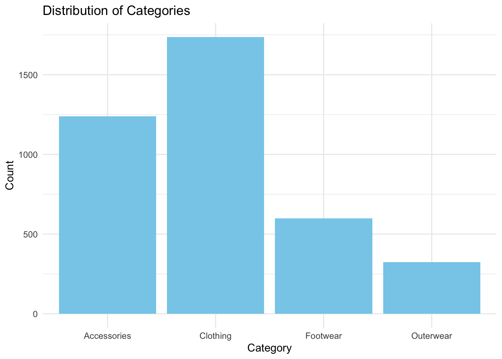
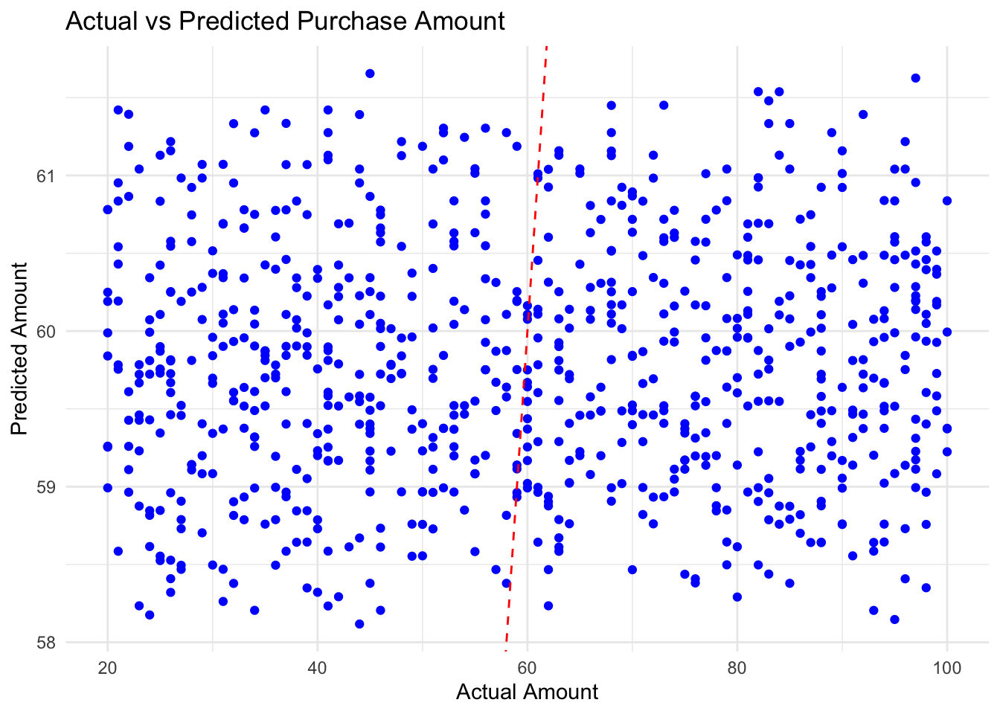

The dataset used for this analysis is the Customer Shopping (Latest Trends) Dataset, available on Kaggle. It provides valuable insights into customer shopping habits, including demographic details, purchase behaviors, and product trends.
Customer.ID Age Gender Item.Purchased
Min. : 1.0 Min. :18.00 Length:3900 Length:3900
1st Qu.: 975.8 1st Qu.:31.00 Class :character Class :character
Median :1950.5 Median :44.00 Mode :character Mode :character
Mean :1950.5 Mean :44.07
3rd Qu.:2925.2 3rd Qu.:57.00
Max. :3900.0 Max. :70.00
Category Purchase.Amount..USD. Location Size
Length:3900 Min. : 20.00 Length:3900 Length:3900
Class :character 1st Qu.: 39.00 Class :character Class :character
Mode :character Median : 60.00 Mode :character Mode :character
Mean : 59.76
3rd Qu.: 81.00
Max. :100.00
Color Season Review.Rating Subscription.Status
Length:3900 Length:3900 Min. :2.50 Length:3900
Class :character Class :character 1st Qu.:3.10 Class :character
Mode :character Mode :character Median :3.70 Mode :character
Mean :3.75
3rd Qu.:4.40
Max. :5.00
Payment.Method Shipping.Type Discount.Applied Promo.Code.Used
Length:3900 Length:3900 Length:3900 Length:3900
Class :character Class :character Class :character Class :character
Mode :character Mode :character Mode :character Mode :character
Previous.Purchases Preferred.Payment.Method Frequency.of.Purchases
Min. : 1.00 Length:3900 Length:3900
1st Qu.:13.00 Class :character Class :character
Median :25.00 Mode :character Mode :character
Mean :25.35
3rd Qu.:38.00
Max. :50.00
head(dataset)
Customer.ID Age Gender Item.Purchased Category Purchase.Amount..USD.
1 1 55 Male Blouse Clothing 53
2 2 19 Male Sweater Clothing 64
3 3 50 Male Jeans Clothing 73
4 4 21 Male Sandals Footwear 90
5 5 45 Male Blouse Clothing 49
6 6 46 Male Sneakers Footwear 20
Location Size Color Season Review.Rating Subscription.Status
1 Kentucky L Gray Winter 3.1 Yes
2 Maine L Maroon Winter 3.1 Yes
3 Massachusetts S Maroon Spring 3.1 Yes
4 Rhode Island M Maroon Spring 3.5 Yes
5 Oregon M Turquoise Spring 2.7 Yes
6 Wyoming M White Summer 2.9 Yes
Payment.Method Shipping.Type Discount.Applied Promo.Code.Used
1 Credit Card Express Yes Yes
2 Bank Transfer Express Yes Yes
3 Cash Free Shipping Yes Yes
4 PayPal Next Day Air Yes Yes
5 Cash Free Shipping Yes Yes
6 Venmo Standard Yes Yes
Previous.Purchases Preferred.Payment.Method Frequency.of.Purchases
1 14 Venmo Fortnightly
2 2 Cash Fortnightly
3 23 Credit Card Weekly
4 49 PayPal Weekly
5 31 PayPal Annually
6 14 Venmo Weekly
The bar plot below illustrates the distribution of product categories purchased by customers. Clothing dominates as the most popular category, followed by Accessories, Footwear, and Outerwear. This suggests that clothing is a primary focus area for customer demand. However, outerwear shows significantly lower engagement, highlighting an opportunity for targeted promotions or campaigns to boost sales in this category.
# Bar plotggplot(dataset, aes(x = Category)) +geom_bar(fill ="skyblue") +theme_minimal() +labs(title ="Distribution of Categories", x ="Category", y ="Count")

0.2Predictive Analysis
Objective: A linear regression model was constructed to predict the Purchase_Amount using Age and Review_Rating. These variables were chosen based on their potential influence on customer purchasing behavior.
#Predictive Analysis:Linear regressiondataset <- dataset %>%rename(Purchase_Amount = Purchase.Amount..USD.) # Simplify column namedataset <- dataset %>%filter(!is.na(Purchase_Amount) & Purchase_Amount >0)set.seed(123)training_index <-createDataPartition(dataset$Purchase_Amount, p =0.8, list =FALSE)training_set <- dataset[training_index, ]test_set <- dataset[-training_index, ]model <-lm(Purchase_Amount ~ Age + Review.Rating, data = training_set)summary(model)
Call:
lm(formula = Purchase_Amount ~ Age + Review.Rating, data = training_set)
Residuals:
Min 1Q Median 3Q Max
-41.245 -21.310 0.016 20.770 41.883
Coefficients:
Estimate Std. Error t value Pr(>|t|)
(Intercept) 57.78143 2.59555 22.262 <2e-16 ***
Age -0.02913 0.02774 -1.050 0.294
Review.Rating 0.87959 0.59398 1.481 0.139
---
Signif. codes: 0 '***' 0.001 '**' 0.01 '*' 0.05 '.' 0.1 ' ' 1
Residual standard error: 23.69 on 3119 degrees of freedom
Multiple R-squared: 0.001073, Adjusted R-squared: 0.0004325
F-statistic: 1.675 on 2 and 3119 DF, p-value: 0.1874
The intercept estimate of 57.78 suggests that the baseline average purchase amount is approximately $57.78 when other variables are at their reference levels. Age has a small, non-significant negative coefficient (-0.029), implying minimal impact on spending behavior. Review_Rating has a positive but non-significant effect (coefficient = 0.88). This suggests that higher ratings may correlate with slightly higher purchases, but the relationship is weak. The model’s Adjusted R-squared value is 0.0004, indicating that only a negligible portion of the variance in purchase amounts is explained by Age and Review_Rating. Additionally, the residual standard error (RSE) of 23.69 and the RMSE of ~23.65 highlight significant prediction errors, which are substantial relative to the purchase amount range ($20–$100).
0.3Visualization: Actual vs Predicted
The scatter plot below compares the actual and predicted purchase amounts. The wide scatter around the ideal prediction line (red dashed) reflects poor alignment between predicted and actual values, reinforcing the model’s low predictive power. This suggests that Age and Review_Rating are insufficient predictors of Purchase_Amount.
#Visualization: Predicted vs Actual Spendggplot(test_set, aes(x = Purchase_Amount, y = Predicted_Purchase)) +geom_point(color ="blue") +geom_abline(intercept =0, slope =1, linetype ="dashed", color ="red") +theme_minimal() +labs(title ="Actual vs Predicted Purchase Amount", x ="Actual Amount", y ="Predicted Amount")

0.4Conclusion
This analysis highlights key trends in customer shopping behavior and identifies opportunities to enhance predictive accuracy. While the current model does not perform well, incorporating additional variables and exploring alternative modeling techniques could significantly improve the insights derived from this dataset.